Grammar of graphics II
Jeff Stevens
2023-04-03
Introduction
Set-up
Seven components/layers of ggplots
- Data
- Mappings – maps data to properties of geom
- Geom – represents data
- Stat – transforms data
- Position – control placement of data on coordinate
- Facet – split graph into subplots
- Coordinate – places data in coordinate system
Aesthetics
Map data to visual properties

Map data columns to plot
mpg |>
ggplot(aes(x = displ, y = hwy)) +
geom_point()Size
Map data to aesthetic
mpg |>
ggplot(aes(x = displ, y = hwy, size = cty)) +
geom_point()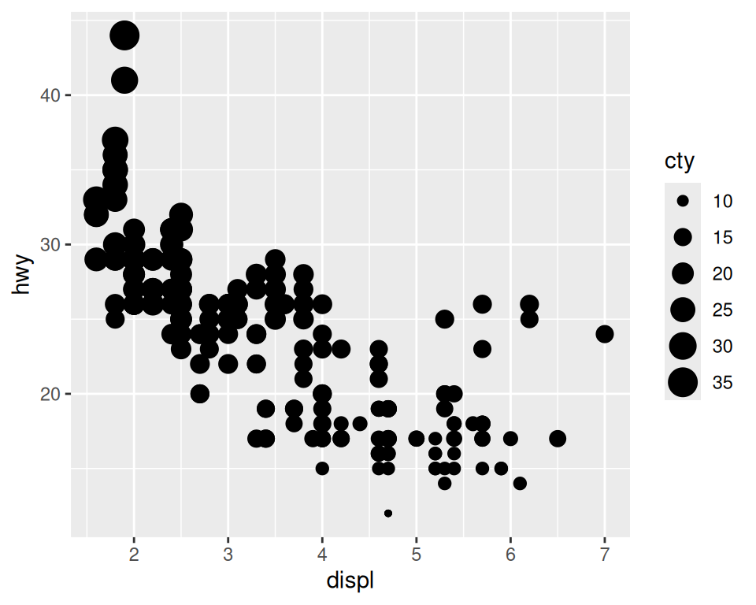
Apply to all points
mpg |>
ggplot(aes(x = displ, y = hwy)) +
geom_point(size = 0.5)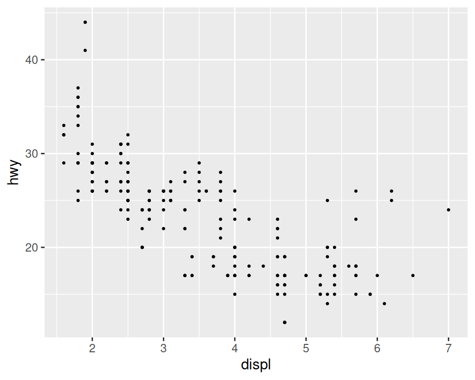
Transparency
Map data to aesthetic
mpg |>
ggplot(aes(x = displ, y = hwy, alpha = cty)) +
geom_point()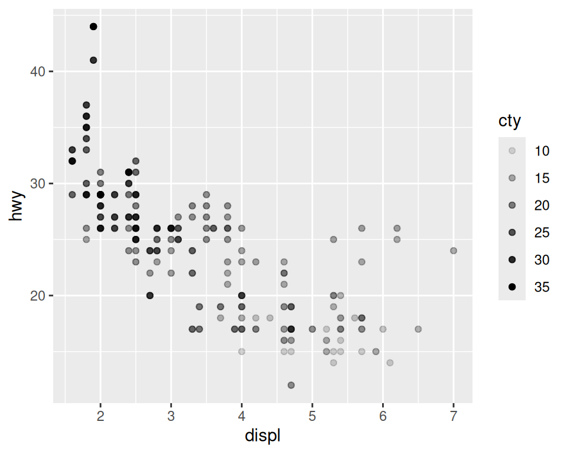
Apply to all points
mpg |>
ggplot(aes(x = displ, y = hwy)) +
geom_point(alpha = 0.25)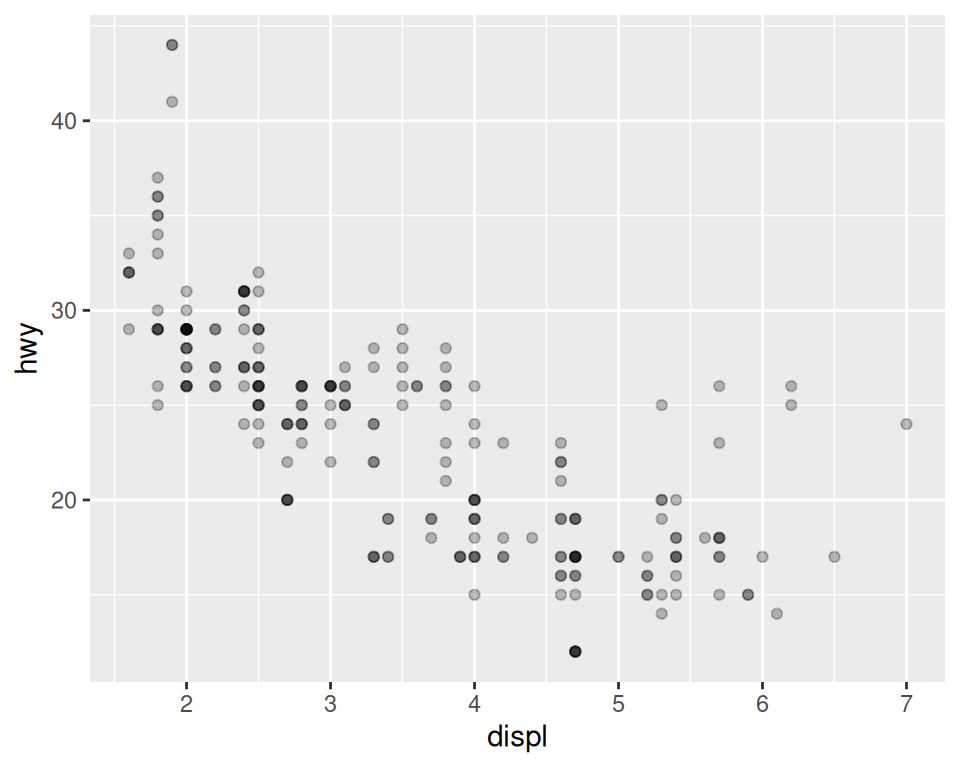
Shape
Map data to aesthetic
mpg |>
ggplot(aes(x = displ, y = hwy, shape = class)) +
geom_point()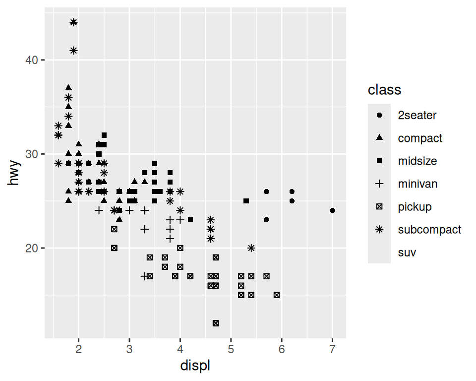
Apply to all points
mpg |>
ggplot(aes(x = displ, y = hwy)) +
geom_point(shape = 5)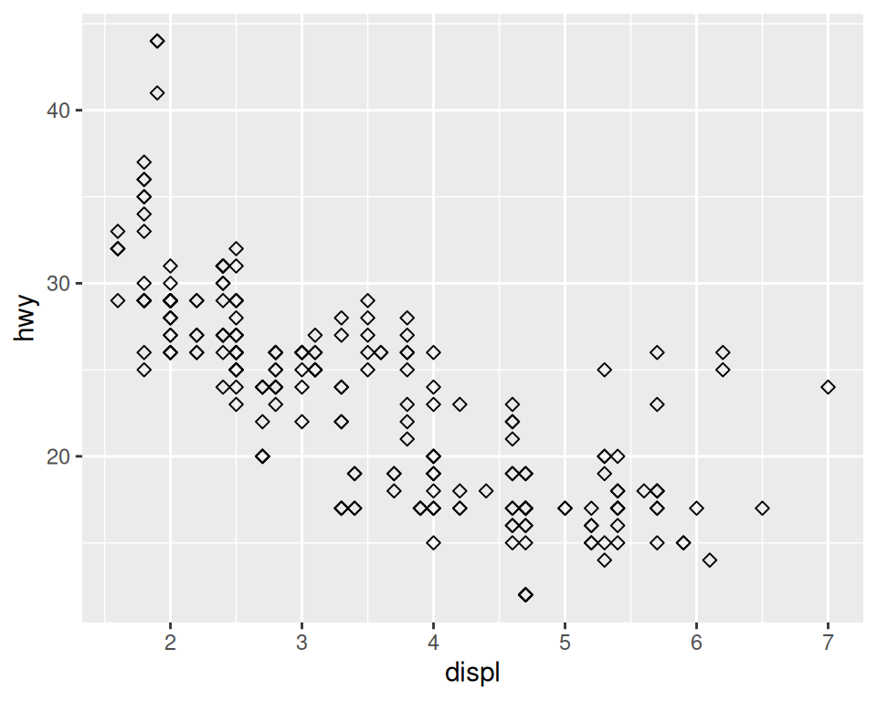
Shapes
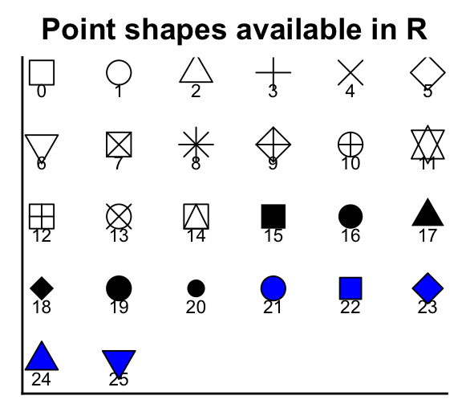Color
Map data to aesthetic
mpg |>
ggplot(aes(x = displ, y = hwy, color = class)) +
geom_point()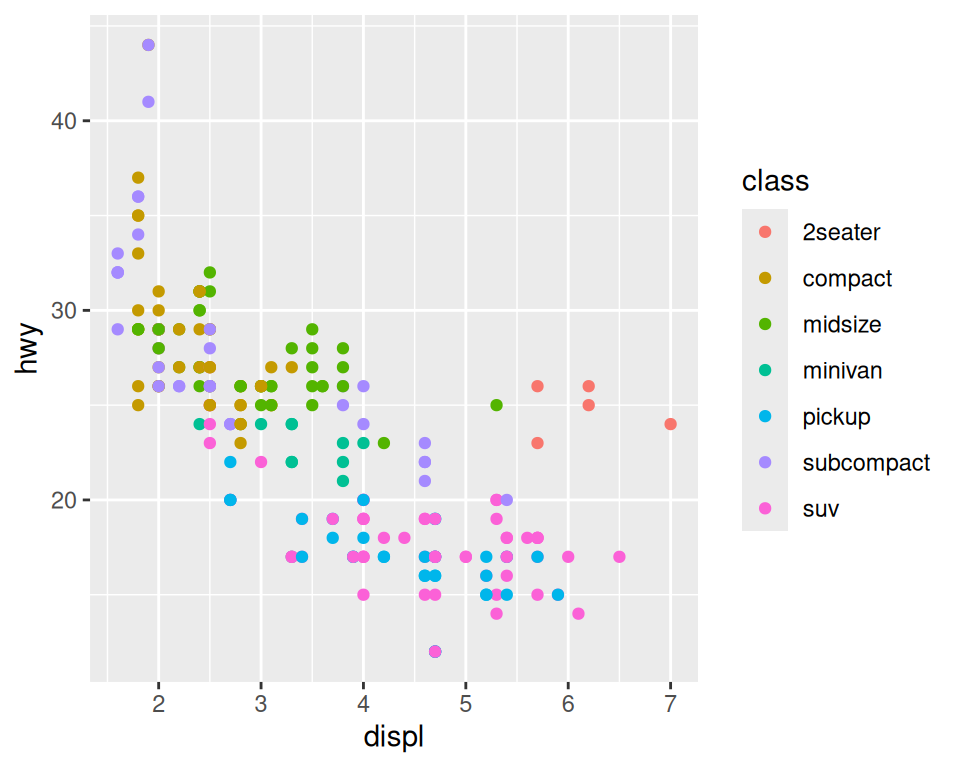
Apply to all points
mpg |>
ggplot(aes(x = displ, y = hwy)) +
geom_point(color = "dodgerblue")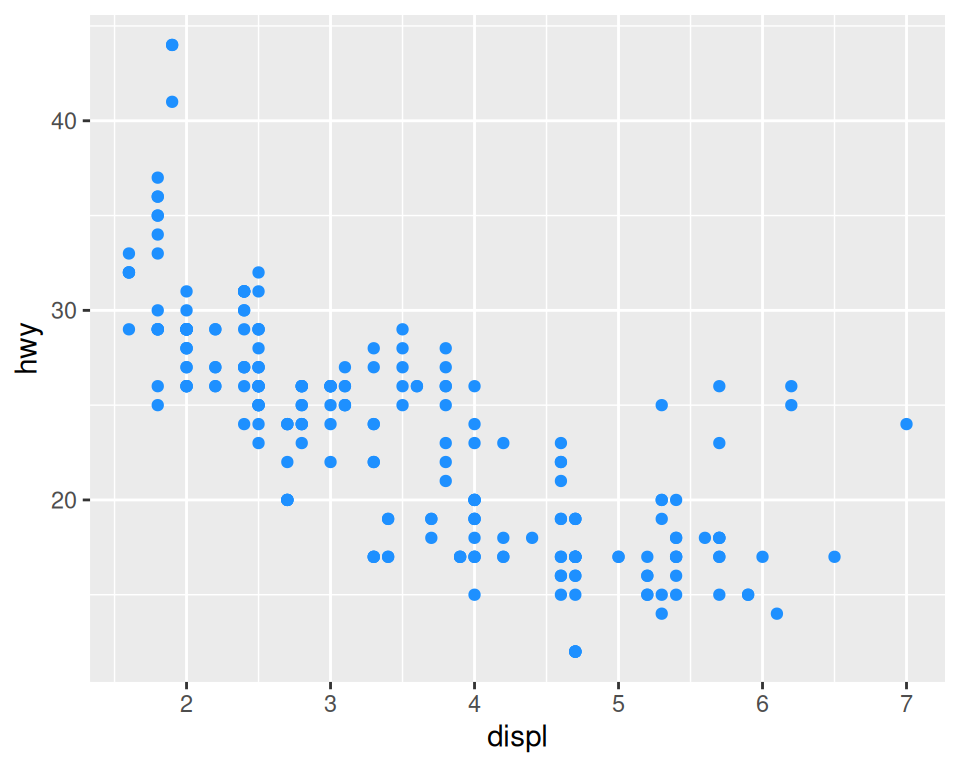
Color
What happens if we put it in the aesthetic?
mpg |>
ggplot(aes(x = displ, y = hwy, color = "dodgerblue")) +
geom_point()Color: points, lines, text, and borders
Fill: filled areas
Lines
Separated by groups
mpg |>
ggplot(aes(x = displ, y = hwy, group = drv)) +
geom_smooth()Linetype
mpg |>
ggplot(aes(x = displ, y = hwy, linetype = drv)) +
geom_smooth()Apply line aesthetics to groups
mpg |>
ggplot(aes(x = displ, y = hwy, color = drv)) +
geom_smooth(show.legend = FALSE)Apply aesthetics to one geom
mpg |>
ggplot(aes(x = displ, y = hwy)) +
geom_point(aes(color = class)) +
geom_smooth()Apply aesthetics differently to geoms
mpg |>
ggplot(aes(x = displ, y = hwy, color = drv)) +
geom_point() +
geom_smooth(aes(linetype = drv))Bands have aesthetics, too
mpg |>
ggplot(aes(x = displ, y = hwy)) +
geom_point() +
geom_smooth(aes(color = drv, fill = drv))Statistical transformations
Statistical transformations
- ggplot can calculate statistics on the fly
- many geoms have underlying statistical transformation
diamonds# A tibble: 53,940 × 10
carat cut color clarity depth table price x y z
<dbl> <ord> <ord> <ord> <dbl> <dbl> <int> <dbl> <dbl> <dbl>
1 0.23 Ideal E SI2 61.5 55 326 3.95 3.98 2.43
2 0.21 Premium E SI1 59.8 61 326 3.89 3.84 2.31
3 0.23 Good E VS1 56.9 65 327 4.05 4.07 2.31
4 0.29 Premium I VS2 62.4 58 334 4.2 4.23 2.63
5 0.31 Good J SI2 63.3 58 335 4.34 4.35 2.75
6 0.24 Very Good J VVS2 62.8 57 336 3.94 3.96 2.48
7 0.24 Very Good I VVS1 62.3 57 336 3.95 3.98 2.47
8 0.26 Very Good H SI1 61.9 55 337 4.07 4.11 2.53
9 0.22 Fair E VS2 65.1 61 337 3.87 3.78 2.49
10 0.23 Very Good H VS1 59.4 61 338 4 4.05 2.39
# ℹ 53,930 more rowsBar plots
Count observations of variable types with stat_count()
Summarize data
diamonds |>
ggplot(aes(x = cut, y = depth)) +
geom_point()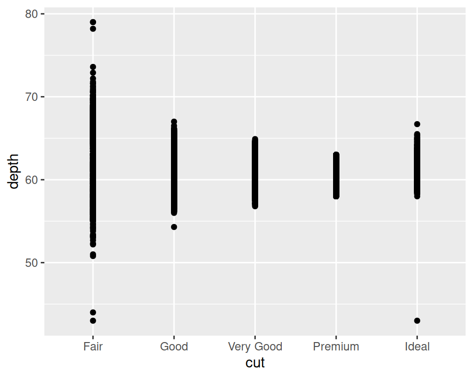
Plot mean and standard error
diamonds |>
ggplot(aes(x = cut, y = depth)) +
stat_summary()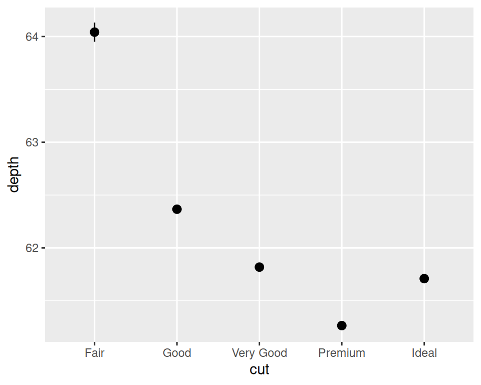
Summarize data
Plot mean and 95% CI
diamonds |>
ggplot(aes(x = cut, y = depth)) +
stat_summary(fun.data = mean_cl_normal)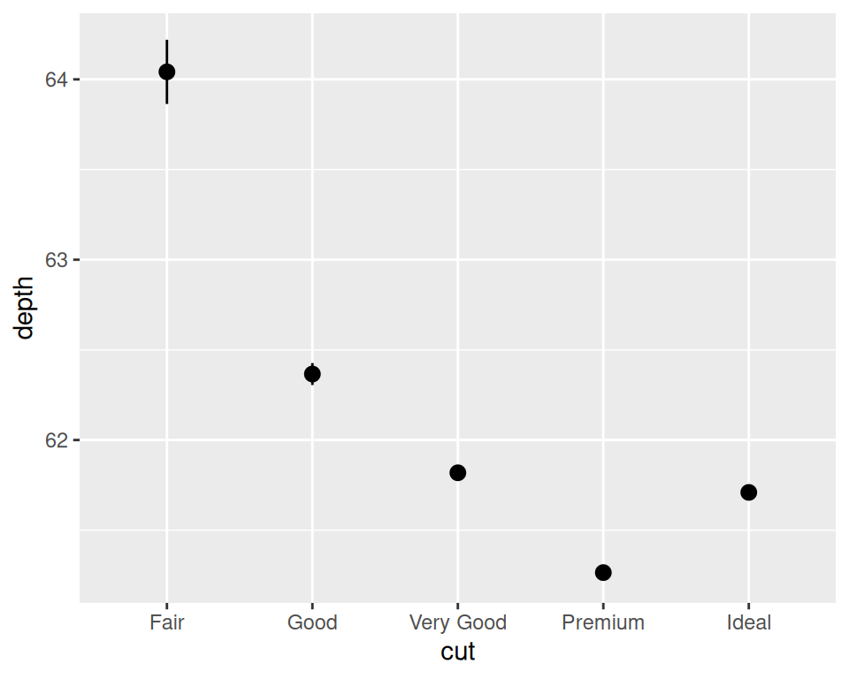
Plot median and range
diamonds |>
ggplot(aes(x = cut, y = depth)) +
stat_summary(fun.min = min, fun.max = max, fun = median)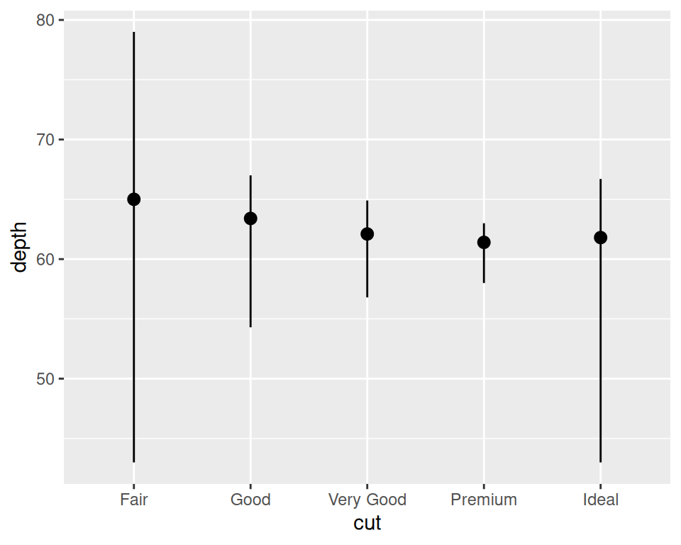
Facets
Facets
Coloring by group difficult to visualize with many groups
mpg |>
ggplot(aes(x = displ, y = hwy, color = class)) +
geom_point()Facet
Pulls out groups into separate panels
mpg |>
ggplot(aes(x = displ, y = hwy)) +
geom_point() +
facet_wrap(~ class)